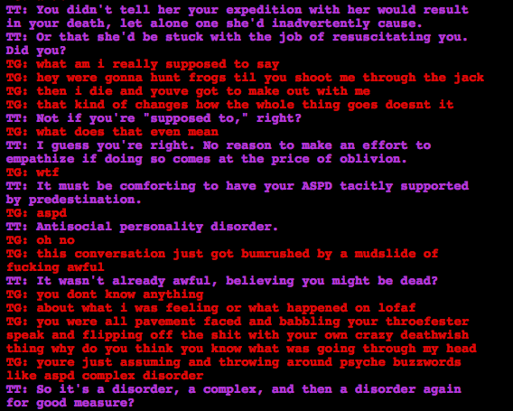

Oh my god Rose, stop being so pretentious and condescending!
Like it’s anti-social to let fate go ahead and have Jade not-kill him, anyway. That makes no sense, if anything Dave has got some depression, maybe dysthymia, going on, and he’s definitely got a suicidal side.
In a different world he probably shouldn’t have let Jade not-kill him, but I’m trusting that the Knight of Time knows what he’s doing when it comes to changing future events.